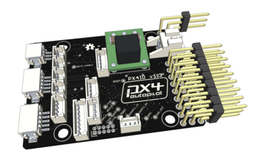

DIY Drones固件更新镜像
这些固件版本由DIY Drones自动测试系统自动生成。
协议
本程序为自由软件：您可依据自由软件基金会所发表的GNU通用公共授权，对本程序再次发布和/或修改；无论您依据的是本授权的第三版，或（您可选的）任一日后发行的版本。本程序是基于使用目的而加以发布，但是不负任何担保责任；亦无对适售性或特定目的适用性所为的默示性担保。详情请参照GNU通用公共授权。
For details see http://www.gnu.org/licenses/gpl.html
安全
操作任何一种动力载具都会很好玩。然而，没有什么事能比发生事故或触犯法律更快地毁掉你在公园的一天。由于我们希望你有一个良好的体验，请确保你按以下所有执行：- 按照当地法律和规定。举个例子，在美国，当前的规定要求你操控多数无人机在400英尺（122米）以下，在视线之内，并远离障碍物和居住区。由于这些规定在不同地方，甚至在相同的国家也各不相同，确保你了解你需要做什么保持合法。
- 绝不要使用对你、其他人以及财产造成危险的方式操作载具或使用软件。螺旋桨，特别是旋转中的，会很容易割伤你；如果一架无人机落在了人或物品上，这可能会导致非常疼或损坏；无人机碰到电线可能会导致很多人停电。就像本·富兰克林说的，“一分预防胜似十分治疗。”
- 时刻记住软件与硬件故障有可能发生。尽管我们试图设计我们的产品把这些问题最小化，你也应该知道在任何时间点故障都有可能发生，而且没有前兆，你要带着这样的认识去操作。因此，你应该采取适当的预防措施来最小化故障发生时的风险。
- 绝不要使用本软件或硬件进行载人。我们提供的软件和硬件仅用于无人设备。
固件
APM Plane - 用于固定翼飞机
 APM Copter - 用于多旋翼与传统直升机
APM Copter - 用于多旋翼与传统直升机
 APM Rover - 用于地面载具和船
APM Rover - 用于地面载具和船
PX4IO - 用于PX4IO板
 MissionPlanner - 任务规划器工具
MissionPlanner - 任务规划器工具
SiK - 3DR电台固件
Tools - 构建与开发工具
DevBuild - 开发者构建
Types of firmware available
To choose a firmware to download you need to choose:- The type of board that you have
- Whether you want the stable, beta or latest version of the firmware
- Whether you want a HIL (hardware in the loop) image
- stable - this is the version recommended for new users. It has had the most testing
- beta - this is the firmware to choose if you want to be part of beta testing of new versions prior to release as a stable version. Note that during some development times the beta release will be the same as the stable release
- latest - this is the latest version from our git source code repository. This version is only for developers. The code may have unknown bugs and extreme care should be taken by anyone using it
Load your firmware using APM Mission Planner
- You can load the stable version of the firmware by selecting the appropriate icon for your airframe from the Firmware Tab.
- You can load the beta version of the firmware by selecting the "BETA firmware" button in the bottom right corner of the screen and then the appropriate icon.
- You can load the latest version of the firmware by downloading a firmware image from one of the links and selecting the "Load custom firmware" button in the bottom right corner of the screen.
Load your firmware using QUpgrade
QUpgrade is a standalone firmware upgrade tool. It can be used to download and flash the appropriate firmware for your PX4 autopilot. Instructions and downloads for Windows, Mac Os, and Linux are available here:
Download QUpgradeLoading APM1 or APM2 firmware on Linux or MacOS
If you don't use Mission Planner on Linux then you can load firmware using the avrdude command. A typical command for uploading a file called ArduPlane.hex to an APM2 or APM1-2560 is:avrdude -patmega2560 -cstk500v2 -P /dev/ttyACM0 -b115200 -D -Uflash:w:ArduPlane.hex:iYou will need to replace the /dev/ttyACM0 path with the path to your APM device. You may wish to use the device paths in /dev/serial/by-id so the path doesn't change. If you have an APM1-1280 then the command would be:
avrdude -patmega1280 -cstk500v1 -P /dev/ttyUSB1 -b115200 -D -Uflash:w:ArduPlane.hex:i
Loading PX4FMU firmware on Linux or MacOS
To load a PX4FMU firmware on a Linux or MacOS machine you will need to use the px_uploader.py python script. You can run it like this:python px_uploader.py --port /dev/ttyACM0 px4fmu.px4After starting the script, press the reset button on your PX4FMU to make it enter bootloader mode.